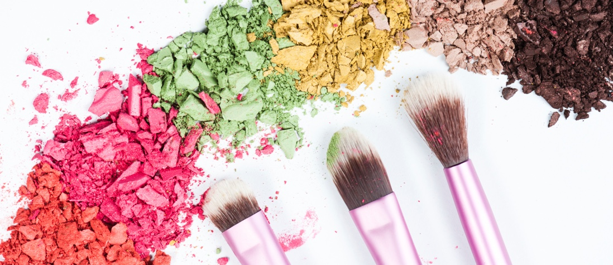

Thoroughly cleansing your face does not pay off if you don’t take care of your makeup sponges, puffs and brushes! Tools that directly touch your face have to be cleaned frequently to avoid any stimulation on your sensitive skin. Residues on the tools oxidize among the air, triggering breakouts and the next time you use the same tools, the texture or color of your makeup won’t come out as expected. Here, we present sanitary management know-hows of beauty tools that your face faces everyday!

BRUSH
Dissolve neutral detergent or brush-exclusive cleansers in the water, make foams using the brush and rinse it off several times. You will be amazed at how much it washes away any leftovers on the brush when you scrub it on kitchen filter nets. As they are fairly inexpensive, consider getting a separate filter net just for cleaning brushes.
Dab the damp brush with a towel and dry it in a ventilated area. It’s better to hang the brush so the bristles face down, not up. It's also alright to lay the brush flat on a towel or tissue to dry. Remember to shape the bristles with your hand, because drying the bristles when they're spaced out will cause an uncomfortable feeling when used on your face and the color will come out unevenly.
It’s easier to use the same remover or cleansing water, since lip & eye brushes are stained with the same ingredients found in point makeups. Rinse the brush as much as possible so all the oily residues are removed. Every day, before using the brush, apply some water-free cleanser (no wash cleanser) to makeup cotton balls and rub the surface of the brush to keep it clean.
SPONGE
Cleaning your sponge too often can make its surface rough, irritating your delicate skin. Note that it’s better to cut off the used tips and use the clean parts in turn. Yet, it’s okay to clean elastic and hard sponges – soak the sponge in cold water, apply enough cleansing oil and massage it to rinse thoroughly.
It’s also a problem not to clean the sponge even once until you use all four sides of it. Very small dot-shaped mildew can appear on the surface depending on where you store your sponge, so wash it or cut the used parts every other day.
These popular poop-shaped and water-drop puffs are all sponge-based tools and because they are often dampened for use, sanitary problems become fairly common. Wash them frequently just like sponges.
CHUSION PUFF
Because cushion puffs are colored blue, it’s hard to find them dirty. There’s no use in only washing their covers because liquid products are absorbed into the puffs.
Make foams with a cleanser, put it into a zipper bag with the cushion puff and then zip the bag shut. Massage the whole plastic bag and the absorbed foundation will ooze out from the puff. Use heavy items to use as pressers for even better results. Massage and rinse several times until you see clear water oozing out from the puff. Then finally, let it dry in the shade.
POWDER PUFF
Oily skin types can make the puffs soggy thanks to their natural oil. When it comes to sweatier and oilier seasons, be especially careful in washing those puffs and keeping them soft.
Make foams in lukewarm water and rinse off the residues by massaging the puffs. Dab the puff with a towel to remove the dampness and let it dry in the shade. Puffs dry better when hanging at clothes horses than laying on floors or tables.